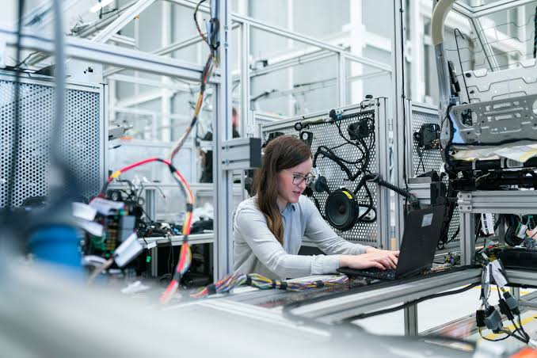
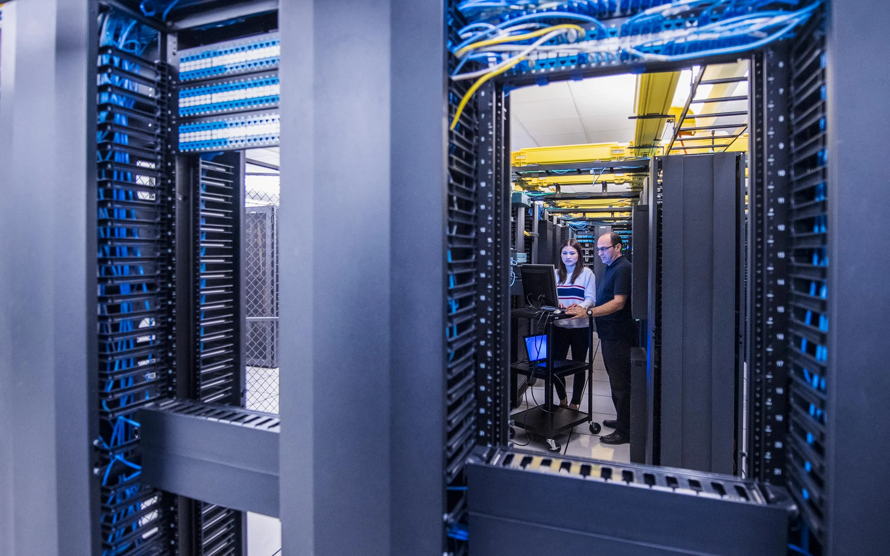
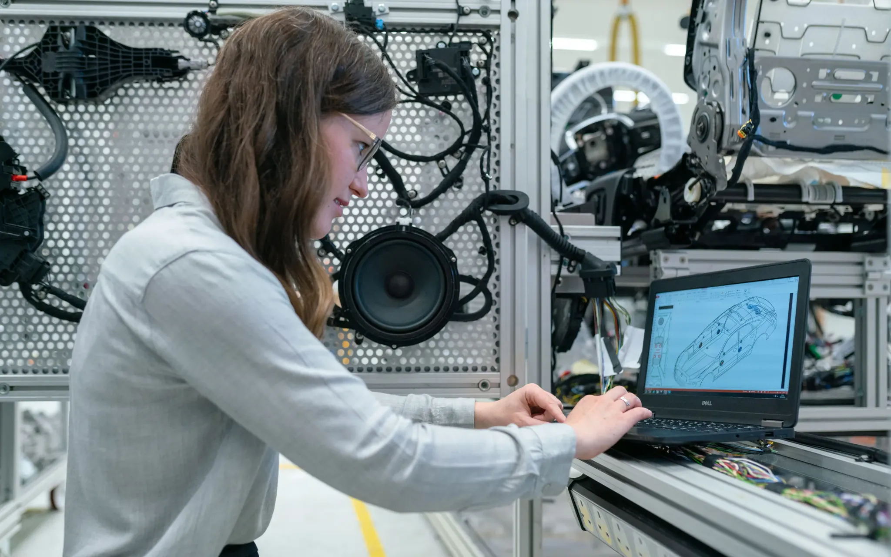
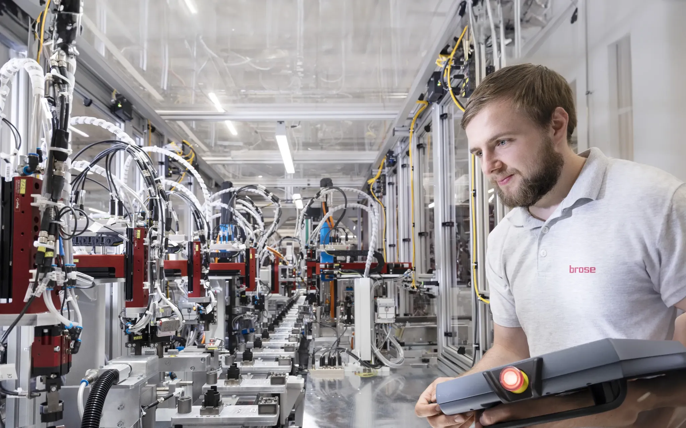

云与基础设施运维
云环境管理、服务器与数据库操作、系统健康检查，以及面向企业客户的日常运维支持。
云运维 · 基础设施 · 可靠性
我专注于云环境、企业基础设施与关键应用的运维支持，帮助团队把每一次技术变化，转化为清晰、可靠、可持续的业务能力。
PORTFOLIO MODULES
作为 IT Technical Supervisor，我在云运维与企业基础设施领域积累了超过十年的实践经验。从服务器管理、数据库运行到监控、事故响应与性能优化，我关注系统每一个环节如何协同，让业务在变化中保持连续。
Patricia Yang — IT Technical Supervisor从基础设施到应用服务，建立清晰的观察、响应与改进路径。
云环境管理、服务器与数据库操作、系统健康检查，以及面向企业客户的日常运维支持。
持续观察系统表现，快速定位异常，降低停机风险，让问题处理回到可复盘、可改善的流程。
连接开发、业务与外部合作伙伴，支持部署、问题解决与持续改进。
从一线 IT 运营，到负责企业客户的云与应用支持。
IT Technical Supervisor · 为企业客户提供云基础设施与应用运维支持，关注稳定性、性能与持续服务改进。
Information Technology Operations Engineer · 负责企业系统与基础设施的日常运作，参与服务器、数据库、监控与故障处理。
Master of Science · Computer Science
稳定不是一个终点，而是每天都在被认真维护的工作习惯。— Patricia Yang
一些关于基础设施、协作与技术现场的视觉记录。





保持联系